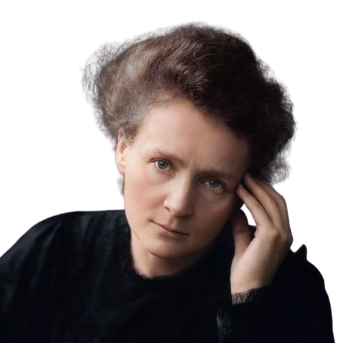

ماری کوری (ماریا اسکلودوفسکا) در سال ۱۸۶۷ در شهر ورشو، لهستان به دنیا آمد. در آن زمان، دانشگاههای
لهستان زنان را پذیرش نمیکردند؛ به همین دلیل، او سالها به عنوان معلم سرخانه کار کرد تا مخارج تحصیل خود
و خواهرش را تأمین کند. ماری در نهایت به پاریس مهاجرت کرد و در دانشگاه سوربن، با وجود فقر شدید و زندگی در
یک اتاق زیرشیروانی سرد، با نمراتی ممتاز در رشته فیزیک و ریاضی فارغالتحصیل شد. او در پاریس با پیر کوری،
دانشمند فیزیک آشنا شد که این آشنایی به یک ازدواج علمی و عاشقانه افسانهای ختم شد.
نقطه عطف زندگی ماری، تحقیق روی پرتوهای مرموز اورانیوم در یک انباری نمور و بدون تهویه بود. او و پیر با
پشتکاری تزلزلناپذیر، تنها سنگ معدن را به صورت دستی تصفیه کردند تا توانستند عناصر جدیدی را کشف کنند.
ماری کوری نخستین زنی شد که جایزه نوبل گرفت و تنها دانشمند تاریخ است که در دو رشته علمی متفاوت (فیزیک و
شیمی) برنده این جایزه شده است. او حتی در جنگ جهانی اول، با راهاندازی خودروهای رادیولوژی سیار به جبههها
رفت تا جان سربازان را نجات دهد. ماری در سال ۱۹۳۴ به دلیل ابتلا به سرطان ناشی از سالها کار بدون ایمنی با
مواد رادیواکتیو درگذشت، اما نام او به عنوان نماد ایثار در راه علم جاودانه شد.

بزرگ ترین دستاورد های ماری کوری
کشف عناصر رادیواکتیو جدید ( پولونیوم و رادیوم )
ماری کوری با بررسی دقیق سنگ معدن اورانیوم متوجه وجود عناصری ناشناخته با تابش بسیار قویتر شد. او عنصر اول را
به افتخار زادگاهش لهستان، «پولونیوم» و عنصر دوم را به دلیل درخشندگی فوقالعادهاش، «رادیوم» نامید؛ دستاوردی
که جدول تناوبی عناصر را بزرگتر کرد و دیدگاه فیزیک را نسبت به پایداری ماده کاملاً تغییر داد.
پایه گذاری واژه و دانش ( رادیواکتیویته )
او برای اولین بار اصطلاح «رادیواکتیویته» را برای توصیف ویژگی متلاشی شدن هسته اتمها و گسیل پرتوها ابداع کرد.
ماری ثابت کرد که این تابش، یک ویژگی اتمی و مربوط به ساختار داخلی خود عنصر است، نه یک واکنش شیمیایی؛ فرضیهای
انقلابی که کلید ورود دانشمندان به عصر فیزیک هستهای و شناخت ساختار اتم شد.
ابداع رادیولوژی جنگی و استفاده پزشکی از اشعه ایکس
با شروع جنگ جهانی اول، او متوجه شد که پزشکان برای درآوردن ترکشها از بدن سربازان به عکسبرداری فوری نیاز
دارند. ماری با دانش خود، خودروهای معمولی را به ایستگاههای سیار اشعه ایکس (معروف به کوریهای کوچک) تبدیل کرد
و شخصاً با رانندگی و آموزش تکنسینها، جان هزاران سرباز را از قطع عضو و مرگ نجات داد.
پایه گذاری رادیوتراپی در درمان سرطان
ماری کوری با درک این موضوع که پرتوهای مواد رادیواکتیو میتوانند سلولهای بیمار و تومورها را از بین ببرند،
روش درمان با رادیوم را پایهگذاری کرد. او انستیتو کوری را در پاریس و ورشو تأسیس نمود که به مراکز اصلی
تحقیقات پزشکی جهان تبدیل شدند و مسیر درمانهای نوین سرطان (پرتودرمانی) را برای بشریت هموار ساختند.